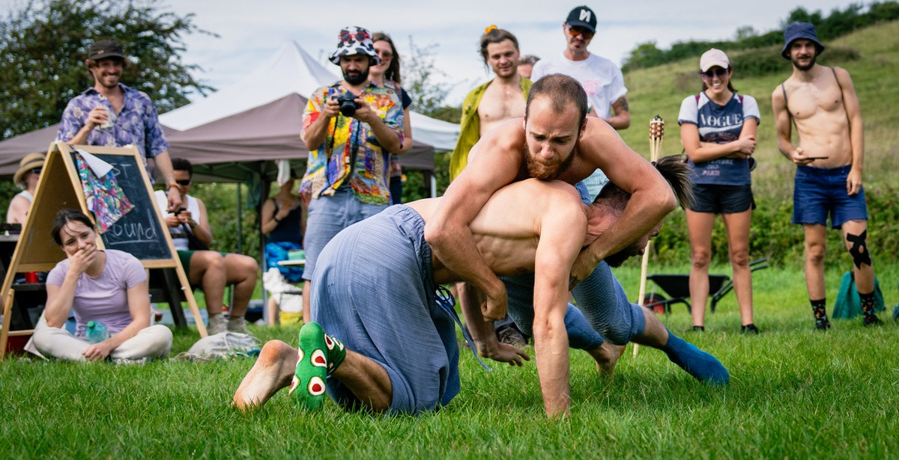
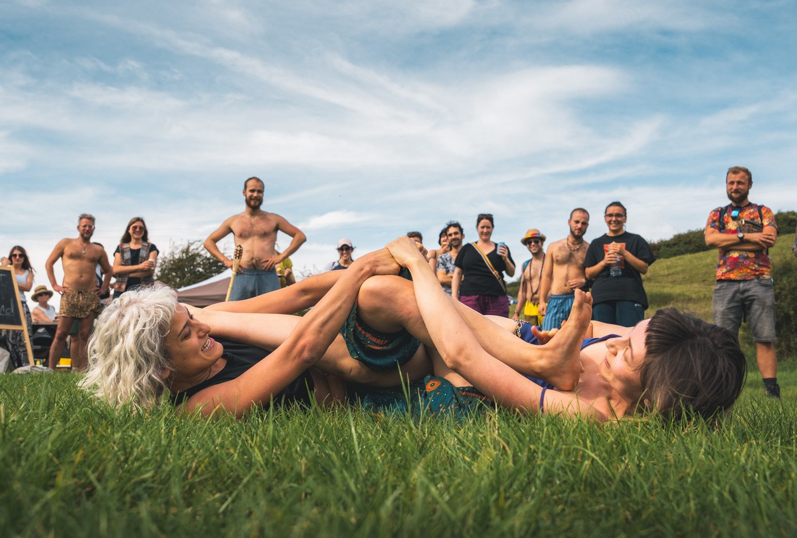
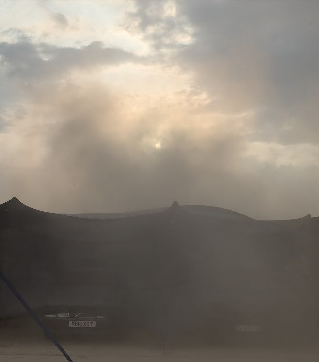

MOOWS / Issue 01 · August 2026
Are burn-style festivals actually bad for you?


Let’s discuss an unpopular topic - are burn-style festivals actually bad for you?
If you are familiar with Burning Man and affiliated events, you probably know that attendees are often enthusiastic, borderline ecstatic about their experience, and how their life is positively impacted. But are we turning a blind eye to unspoken negative effects? Let’s deconstruct some of the core aspects through the infamous 10 principles and debunk them.
Decommodification: behind the gifting economy is an illusion, since participants pre-purchase everything before the event. In fact, it creates more waste, since most people overbuy for safety, and lots of food and other essential supplies end up thrown away. Besides, lots of money is actually being spent by the org on essential services like toilets cleaning and water delivery, in plain sight.
Gifting: people typically purchase inexpensive items to gift, which fosters a sense that human connection still requires a tokenised item, just like money. People often barter, which defeats the purpose of an unconditional gift.
Radical inclusion: Despite being a good idea, it’s interesting how post-event census shows the lack of racial, social and financial diversity at the events, so we can say that only a specific sort of person is included.
Radical self-expression: Because of this, and inclusion, anything is permitted, no one will really tell you if you mess up, if your idea is bad, or give you negative feedback on anything.
Radical self-reliance: instead of pooling resources in order to use less, each participant is invited to bring everything they need themselves, which reinforces individualism rather than collectivism, ironically.
Communal effort: A noble principle, that can have a side effect of putting people in social silos. By coming back regularly and engaging with the community, where people often discuss what other burns they’ve been to, create a long term risk of being surrounded only by burner friends, and therefore not being exposed to different points of views or ideas.
Civic responsibility: Perhaps the most laughable of all, since large amounts of drugs are purchased and casually used in the open by a lot of participants, in blatant disregard of local laws, and turning a blind eye on the supply chains.
Leaving No Trace: It’s actually really nice to see that people are very conscious about waste and pick stuff rubbish from the floor even if it doesn’t belong to them, until you see piles of trash left on the side of the road just outside the event, or in the next town.
Participation: Everyone works for free to make the event happen -genius idea to get free labour? Since participation is not tracked or measured, commitment levels widely vary from people spending weeks of hard labour to people just turning up for the party.
Immediacy: The incentive to act without careful thinking (“listen to your body”, they say) can lead to a mild amount of peer pressure, especially considering that participants spent time and money for the event, so they are more likely to agree to something since they made it so far - they didn’t come all the way there to say no. This can sometimes lead to people hurting themselves, by doing all sorts of shenanigans including, but not limited to, climbing and falling from dodgy structures, taking too many drugs, dehydration, injury, emotional overwhelm.
Consent: We absolutely need it, it’s very important, and a powerful and positive vector of change in society at large - but could we also argue that an excess amount of it could make you more sensitive when back in the default world? It can feel outrageous when people outside the event behave differently than expected during a burn, potentially steering you away from mainstream events.
Beyond the principles, the events have a very large carbon footprint, and a tremendous amount of CO2 is emitted, mainly petrol generators running 24/7 to power the sound systems and lights, as well as private AC units, and tens of thousands of vehicles - not mentioning the amount of cheap gear and outfits bought for the occasion from cheap Asian web stores, discarded after one use.
Overall, the events are a sort of peak experience, centering around self-actualisation and the refinement and accomplishment of individual needs, which we could praise, but we we can also argue that it lacks a level of self-awareness at how privileged participants are, having the luxury to spend at least one week of holiday and a sizeable amount of money, sometimes multiple times per year.
This is not inherently wrong, but being aware that it’s not accessible for most people, and acknowledging how privileged and lucky participants are, through self awareness, doesn’t hurt.
If you made it that far, thank you for enduring this torrent of negativity, for a full disclaimer I participate at burns every year and thoroughly enjoy it, I just thought it would be interesting to reflect on these aspects! Agree to disagree.
